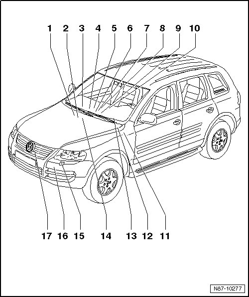

Climatronic Components Overview
Climatronic Components Overview

1 High Pressure Sensor (G65)
• Removing and installing, refer to --> [ High Pressure Sensor ] Service and Repair
2 Fresh Air Intake Duct Temperature Sensor (G89)
• Removing and installing, refer to --> [ Fresh Air Intake Duct Temperature Sensor ] Fresh Air Intake Duct Temperature Sensor
3 Front Blower Regulation Sensor (Bitron) (G462)
• Removing and installing, refer to --> [ Front Blower Regulation Sensor ] Front Blower Regulation Sensor
4 Rear Blower Regulation Motor (Bitron) (V306)
• Removing and installing, refer to --> [ Rear Blower Regulation ] Service and Repair
5 Sunlight Photo Sensor (G107) or Sunlight Photo Sensor 2 (G134)
• Removing and installing, refer to --> [ Sunlight Photo Sensor ] Service and Repair
6 Right Footwell Vent Temperature Sensor (G262)
• Removing and installing, refer to --> [ Right Footwell Vent ] Right Footwell Vent
7 Evaporator Temperature Sensor (G308)
• Removing and installing, refer to --> [ Evaporator Vent ] Evaporator Vent
8 Right Front Upper Body Outlet Temperature Sensor (G386)
• Removing and installing, refer to --> [ Right Front Upper Body Outlet ] Right Front Upper Body Outlet
9 Left Front Upper Body Outlet Temperature Sensor (G385)
• Removing and installing, refer to --> [ Left Front Upper Body Outlet ] Left Front Upper Body Outlet.
10 Climatronic Control Module (J255)
• Climatronic Control Module (J255), A/C Control Head (E87) and Instrument Panel Interior Temperature Sensor (006785-3211) (G56) with Interior Temperature Sensor Fan (V42) are one component that cannot be disassembled.
• Removing and installing, refer to --> [ Manual A/C System and Climatronic Control Module ] Removal and Replacement
11 Coolant Pump (V36)
• Only on vehicles with gasoline engine without auxiliary heater
12 Air Quality Sensor (G238)
• Removing and installing, refer to--> [ Air Quality Sensor ] Description and Operation
13 Left Footwell Vent Temperature Sensor (G261)
• Removing and installing, refer to --> [ Left Footwell Vent ] Left Footwell Vent
14 Headliner Interior Temperature Sensor (G86)
• Component location: in left plenum chamber at E-box.
• Only installed in vehicles with solar roof. Fresh air blower switches on at temperatures above 15 °C and off again at temperatures below 10 °C.
• Removing and installing, refer to--> [ Interior Headliner ] Interior Headliner
15 A/C Compressor Regulator Valve (N280)
• The A/C Compressor Regulator Valve (N280) and the A/C compressor cannot be disassembled.
• A/C compressor, removing and installing, refer to --> [ Compressors ] Compressors
16 Refrigerant Temperature Sensor (G454)
• Removing and installing, refer to--> [ Refrigerant Temperature Sensor ] Removal and Replacement
17 Outside Air Temperature Sensor (G17)
• Removing and installing, refer to --> [ Outside Air Temperature ] Outside Air Temperature